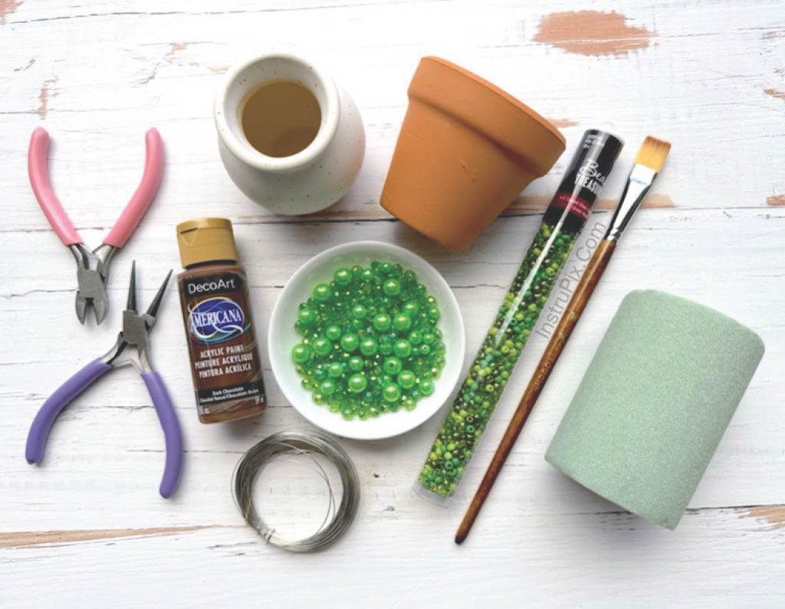
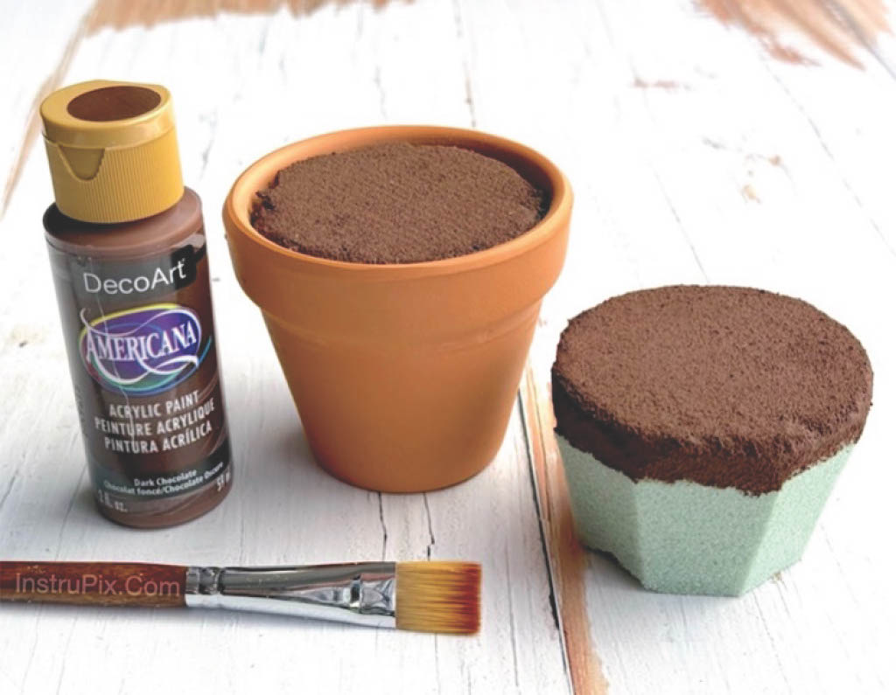
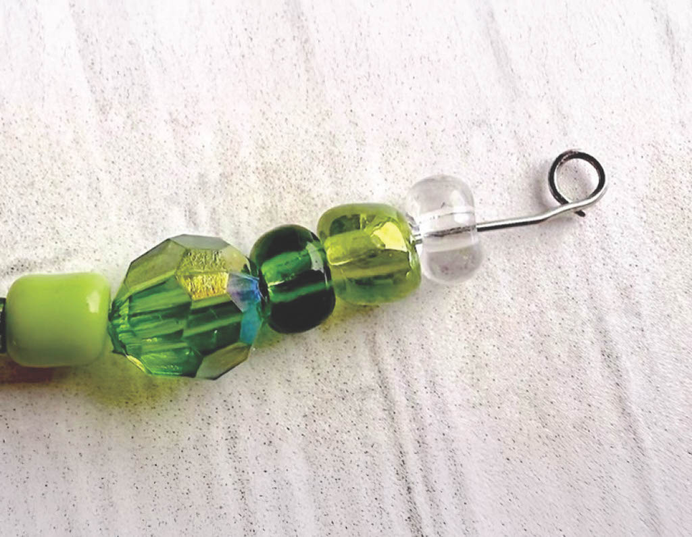
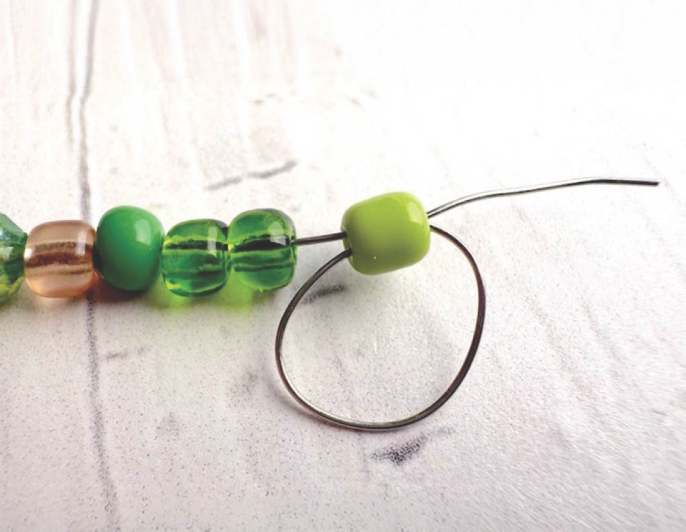
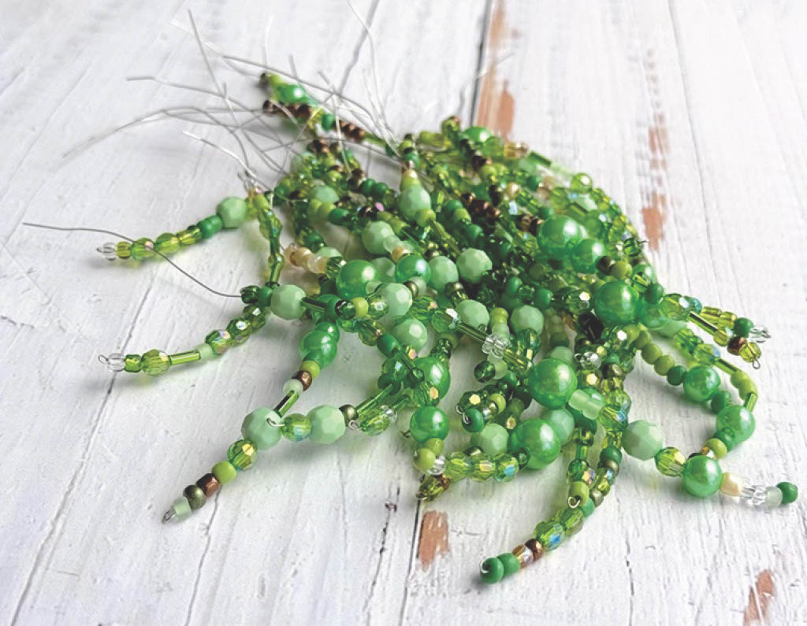
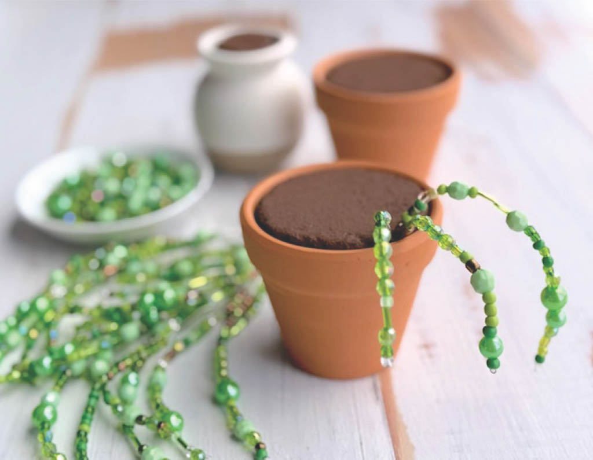
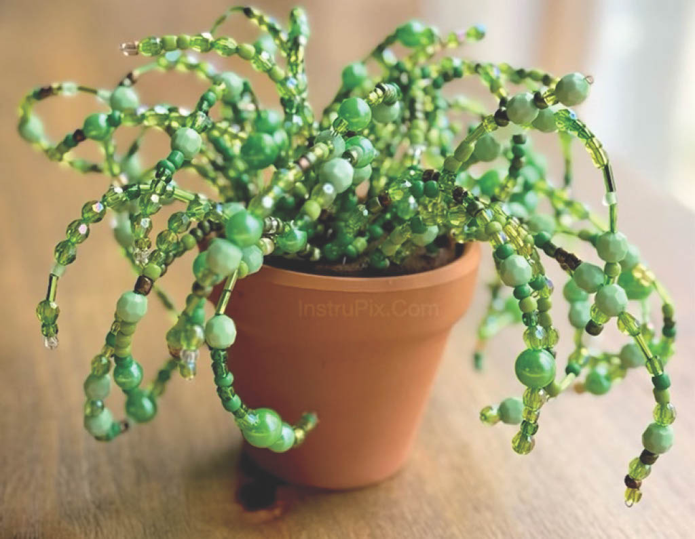
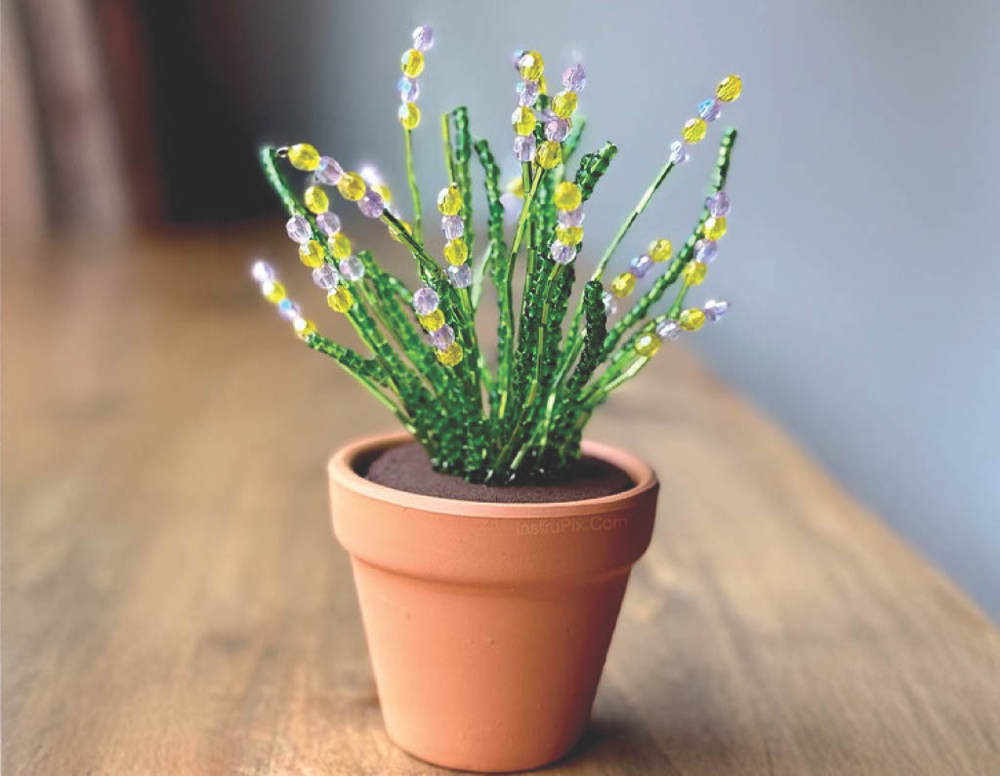
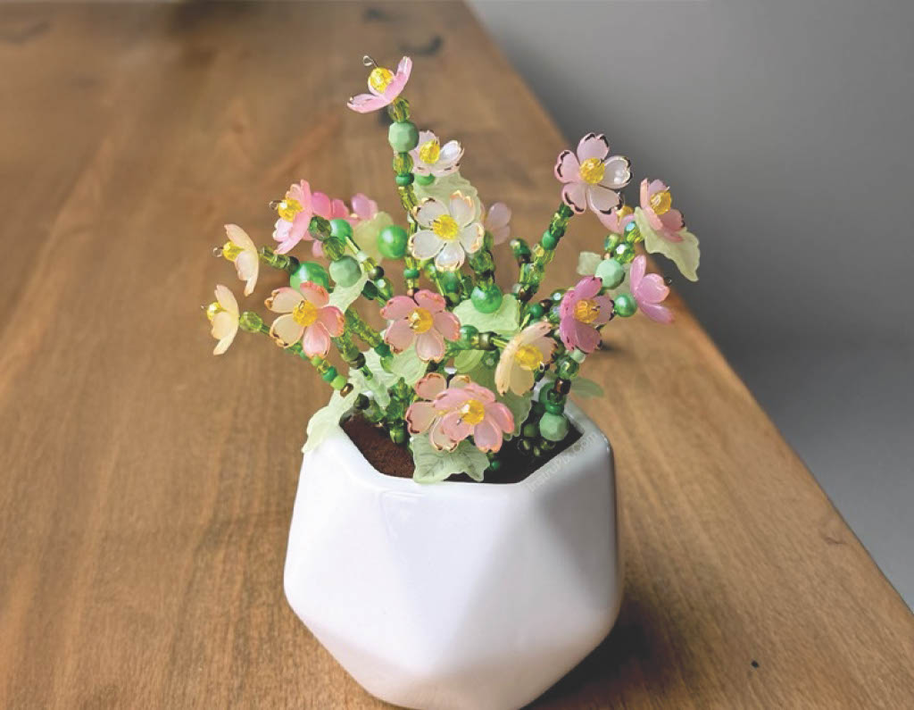

Supplies needed:
- Small pot(s) of choice
- Floral foam
- Variety of green beads
- 26 gauge jewelry wire
- Brown acrylic paint
- Small paint brush
- Wire cutters and round nose pliers

Step 1:
Use a simple kitchen knife to carve and shape the foam to fit tightly into your pot. Before placing the foam all the way into your pot, paint the tops with your brown paint. Once the paint has dried, place the foam snuggly into your pot.

Step 2:
Start off by cutting several pieces of wire ranging in sizes from 3-6 inches. Use the round nose pliers to form a small loop at the end of each one. Then lace beads onto the wires any way you’d like.

Step 3:
It helps to use the round nose pliers to pull the wire through while holding the last bead in place with your fingers. Be sure to leave 1-2 inches of wire at the end of each stem.

Step 4:
Form about 20-40 stems for each plant.

Step 5:
To assemble, simply stick the wire side of the stems into your prepared foam pots. There’s no right or wrong way to do this!

Step 6:
Once you add all your stems you have a cute beaded potted plant!

Step 7 (optional):
Make this project even more interesting with added color and bling.

Step 8 (optional):
You can’t have a potted plant without a few spring flowers! Add custom flower beads for a extra touch.